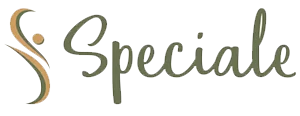
Alivie tensões musculares e entenda o que está causando seu desconforto com um atendimento especializado e personalizado.
Tensão no pescoço, ombros ou costas… rigidez ao acordar… desconforto que vai e volta ao longo do dia?
Já tentou massagens ou relaxantes musculares… mas o alívio dura pouco?
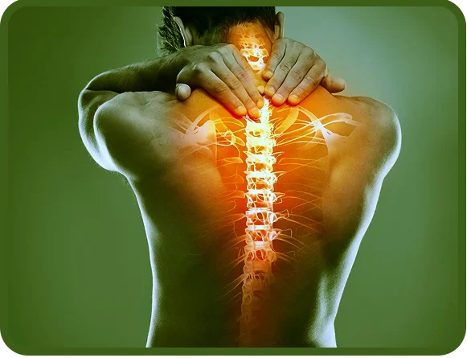
Atendimento Particular
(Não trabalhamos com convênios)
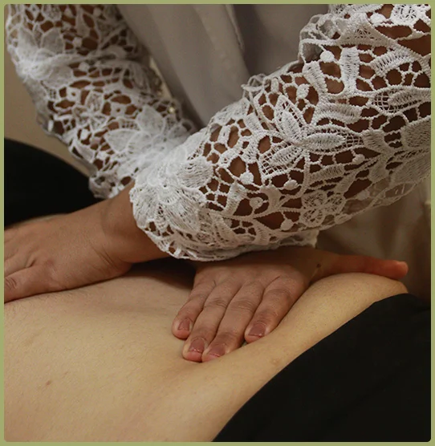
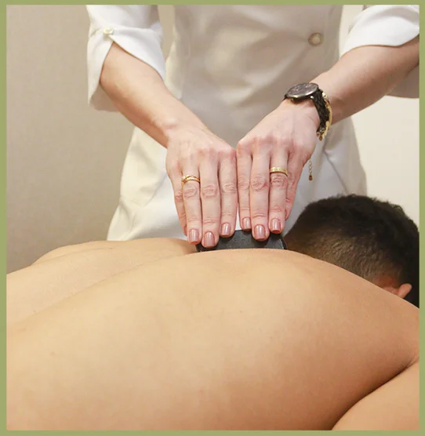
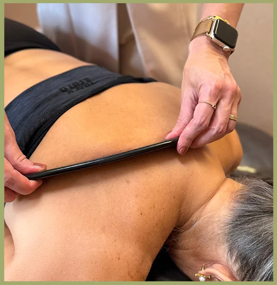
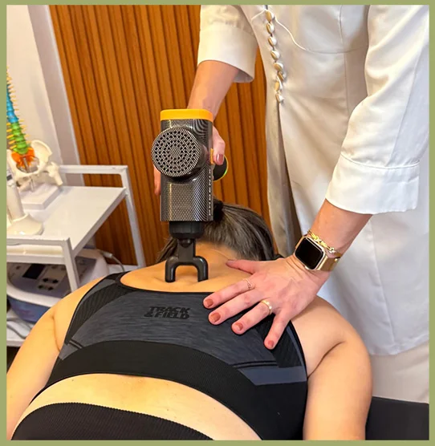
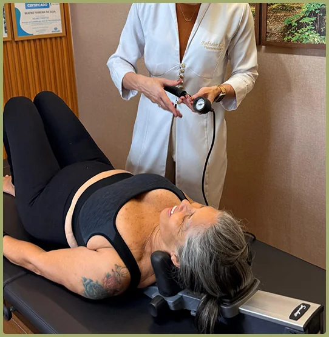
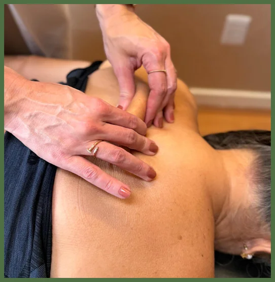
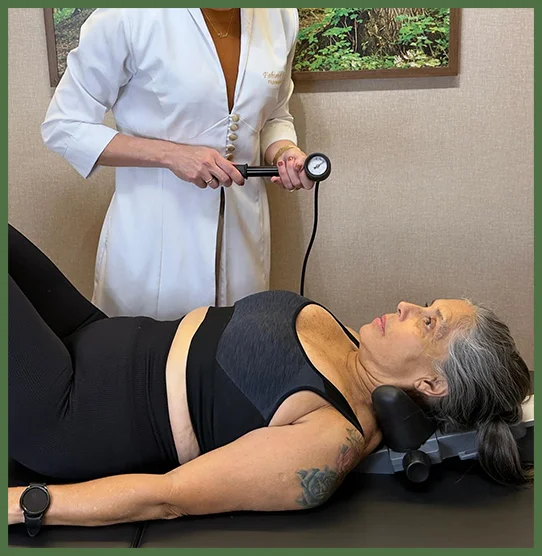
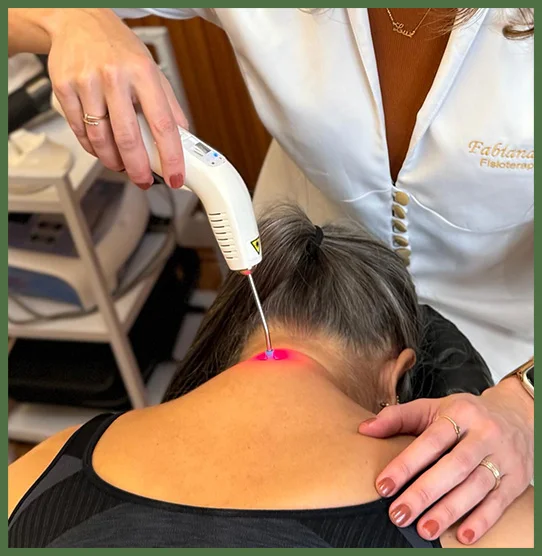
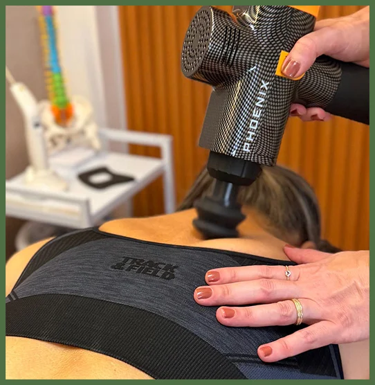
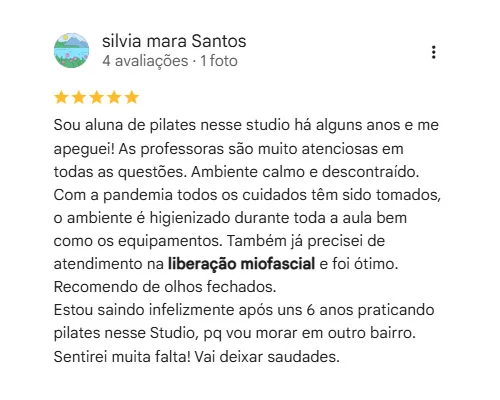
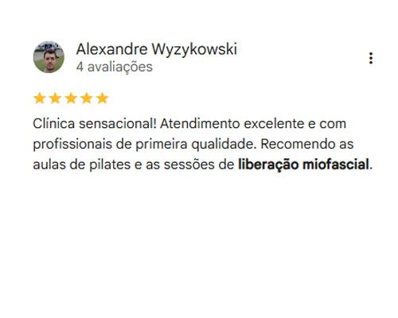
Fabiana Luz — Fisioterapeuta, 18 anos de experiência
Especialista em tratamento da dor e tensões musculares. Certificada no Método IASTM e com Certificação Completa no Método Salik de Liberação Miofascial — uma das formações mais avançadas disponíveis no Brasil para essa técnica. Pós-graduada em Terapia Manual e Postural.
Beatriz Ferreira — Fisioterapeuta, 10 anos de experiência
Especialista em disfunções musculoesqueléticas e dor orofacial. Formada em Liberação Miofascial Manual e Instrumental, com Certificação Completa no Método Salik. Pós-graduada em DTM e Dor Orofacial.
Cada sessão é conduzida com avaliação cuidadosa, técnica precisa e atenção total ao que o seu corpo está comunicando. Você não é atendida por um protocolo — é atendida por especialistas que sabem exatamente o que estão fazendo.
Fabiana Luz — Fisioterapeuta, 18 anos de experiência
Especialista em tratamento da dor e tensões musculares. Certificada no Método IASTM e com Certificação Completa no Método Salik de Liberação Miofascial — uma das formações mais avançadas disponíveis no Brasil para essa técnica. Pós-graduada em Terapia Manual e Postural.
Beatriz Ferreira — Fisioterapeuta, 10 anos de experiência
Especialista em disfunções musculoesqueléticas e dor orofacial. Formada em Liberação Miofascial Manual e Instrumental, com Certificação Completa no Método Salik. Pós-graduada em DTM e Dor Orofacial.
Cada sessão é conduzida com avaliação cuidadosa, técnica precisa e atenção total ao que o seu corpo está comunicando. Você não é atendida por um protocolo — é atendida por especialistas que sabem exatamente o que estão fazendo.
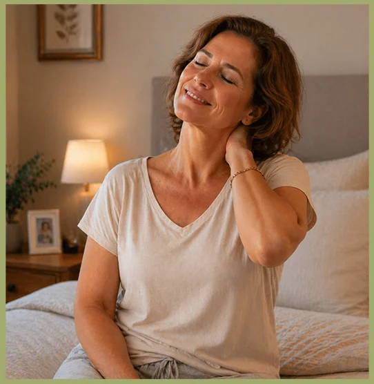
É um atendimento terapêutico que ajuda a reduzir tensões musculares, melhorar a mobilidade e aliviar regiões de rigidez e desconforto.
A técnica pode gerar algum desconforto em áreas mais tensas, mas é conduzida com cuidado, respeitando a sensibilidade de cada paciente.
Ela é indicada para pessoas que sentem rigidez muscular, pontos doloridos, tensão acumulada, corpo travado ou dificuldade de movimento.
Isso varia conforme o seu caso. Por isso, a avaliação detalhada é essencial para definir um plano de tratamento personalizado.
A liberação miofascial é uma técnica terapêutica com foco específico em tensão muscular e mobilidade, enquanto a massagem comum costuma ter um objetivo mais geral de relaxamento.
Sim. Cada paciente é avaliado individualmente para que o tratamento seja ajustado às suas necessidades e aos seus sintomas.
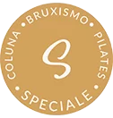
© 2026 – Speciale Saúde. CNPJ: 24.402.312/0001-90. Todos os direitos reservados.